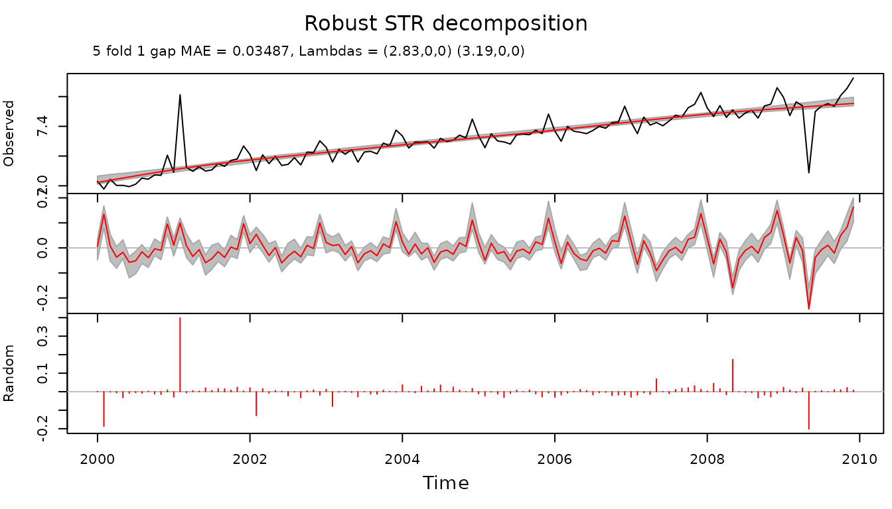

This vignette describes some functionality and provides a few examples of how to use package stR. stR implements method STR, where STR stands for Seasonal-Trend decomposition by Regression and capital R emphasizes R, the name of the popular statistical software. The whole name is also reminiscent of STL, the method which inspired me to introduce STR.
Introduction
There are many packages and methods which work with seasonal data.
For example the oldest method for decomposition – classical additive
decomposition – is implemented in package stats. The method
splits the data into trend, seasonal and random components:
Another well known method is STL, implemented in packages
stats and stlplus:
Other R packages which implement various versions of seasonal
decomposition and seasonal adjustment include forecast,
x12, seasonal, season,
seas and deseasonalize.
A few more examples are provided below:
plot(co2.fit)After looking at the above examples, a reader might ask “Why do we need another method of seasonal decomposition?”
A short answer is that
- the new STR method has a richer set of features (and allows users to implement even more features); and
- the method has a well studied theoretical background (based on OLS and quantile regression).
This vignette provides some details on the first claim.
Getting started
For time series decomposition with objects of class ts
or class msts, and with no regressors or complex
seasonality, it is simple to do an STR decomposition using the
AutoSTR function.
For example, the co2 time series can be decomposed as
follows:
co2.fit <- AutoSTR(co2)
plot(co2.fit)Example with multiple seasonality
The time series taylor from package
forecast provides us with half-hourly electricity demand in
England and Wales. It exhibits (at least) two seasonalities – daily and
weekly. They can be observed in a 4 weeks’ subset of the data:
taylor.msts <- msts(log(head(as.vector(taylor), 336 * 4)),
seasonal.periods = c(48, 48 * 7, 48 * 7 * 52.25),
start = 2000 + 22 / 52
)
plot(taylor.msts, ylab = "Electricity demand")Since the data is at half hour granularity, the daily seasonality has a period of 48 observations and weekly has a period of 336.
The data is of class msts (multiple seasonal time
series), which can also be handled automatically with
AutoSTR:
taylor.fit <- AutoSTR(taylor.msts, gapCV = 48, confidence = 0.95)
plot(taylor.fit)The parameters supplied to AutoSTR are:
-
gapCV = 48– gaps of 48 observations are used for cross validation -
reltol = 0.001– this parameter is passed directly tooptimfunction to control how well (and for how long) the model parameters are optimized -
confidence = 0.95– 95% confidence intervals are calculated (with assumptions: errors are uncorrelated, model parameters are estimated exactly)
Tuning an STR decomposition
This example shows how to tune an STR decomposition, rather than use
the automated AutoSTR function. STR is a flexible method,
which can be adjusted to the data in multiple ways, making the interface
rather complex.
Let us consider the dataset grocery which contains
monthly data of supermarkets and grocery stores turnover in New South
Wales:
plot(grocery, ylab = "NSW Grocery Turnover, $ 10^6")We will use a log transformation to stabilize seasonal variance in the data:
At the next step we define trend and seasonal structures. Trend does
not have seasonality, therefore its seasonal structure contains only a
single knot: c(1,0). Here a knot is defined as a pair of
numbers, both referring to the same point. The segments
component contains only one segment c(0,1).
The seasonal structure of the data is defined in the
seasonalStructure variable. The segments
component contains one pair of numbers c(0,12) which
defines ends the segment, while sKnots variable contains
seasonal knots from 1 to 12 (months). The last knot c(0,12)
also defines that ends of the segment c(0,12) are connected
and 0 and 12 represent the same knot (month December).
seasonalStructure <- list(
segments = list(c(0, 12)),
sKnots = list(1, 2, 3, 4, 5, 6, 7, 8, 9, 10, 11, c(12, 0))
)Variable seasons contains months corresponding to every
data point:
Since trend does not have seasonality (the seasonal structure for the trend contains only one season), the trend seasons are all ones:
The times vector contains times corresponding to data
points:
The data vector contains observations (in this case log
turnover):
data <- as.vector(logGr)trendTimeKnots vector contains times where time knots
for the trend are positioned:
The seasonTimeKnots vector contains times where time
knots for the seasonal component are positioned:
In stR package every component of a decomposition is a regressor. In the case of trend and seasonal components values for such regressors are constants (vectors of ones):
The complete trend structure contains all components
relevant to the trend. Component lambdas is always a vector
with three elements. Trend, since it does not have seasonality, has only
the first element different from zero. This element defines smoothness
of the trend at the starting point of the optimization procedure.
trend <- list(
name = "Trend",
data = trendData,
times = times,
seasons = trendSeasons,
timeKnots = trendTimeKnots,
seasonalStructure = trendSeasonalStructure,
lambdas = c(0.5, 0, 0)
)The complete season structure contains all components
relevant to the trend. Component lambdas is a vector with
three elements. The elements define smoothness of the seasonal component
at starting point of the optimization procedure.
According to STR approach every non-static seasonal component has two-dimensional structure (see the corresponding article on STR method). In this particular case it has topology of a tube. The “observed” seasonal component is a spiral subset of that “tube organised” data (“observed” means here that the seasonal component is observed as part of the data together with the trend and other components).
The first element of the vector defines smoothness of data along time dimension of the tube. The second component defines smoothness along seasonal dimension. And the third component defines smoothness in some way in both dimensions (by restricting partial discrete derivative in both directions).
The last two zeros in lambdas component mean that those
two components will not be optimized (and effectively two dimensional
structure of the seasonal component will not be used).
season <- list(
name = "Yearly seasonality",
data = seasonData,
times = times,
seasons = seasons,
timeKnots = seasonTimeKnots,
seasonalStructure = seasonalStructure,
lambdas = c(10, 0, 0)
)All components of STR decomposition are considered to be predictors. For example trend is a predictor with no seasonality and independent variable which is constant (and equal to one). The seasonal component is a predictor with some predefined seasonality and a constant independent variable (also equal to one).
predictors <- list(trend, season)To calculate STR decomposition we supply data points, predictors, required confidence intervals, the gap, to perform cross validation, and reltol parameter which was described earlier.
gr.fit <- STR(data, predictors, confidence = 0.95, gap = 1, reltol = 0.00001)
plot(gr.fit, xTime = times, forecastPanels = NULL)In plot function forecastPanels = NULL
means that fit/forecast are not displayed.
If we decide to use two-dimensional structure for the seasonal
component we need to redefine lambdas component:
season <- list(
name = "Yearly seasonality",
data = seasonData,
times = times,
seasons = seasons,
timeKnots = seasonTimeKnots,
seasonalStructure = seasonalStructure,
lambdas = c(1, 1, 1)
)
predictors <- list(trend, season)
gr.fit <- STR(data,
predictors,
confidence = 0.95,
gap = 1,
reltol = 0.00001
)This allows to find a set of parameters with a smaller cross validated error, and therefore potentially more insightful decomposition:
plot(gr.fit, xTime = times, forecastPanels = NULL)Robust STR decomposition
Since STR is based on Ordinary Least Squares (OLS), it does not tolerate outliers well. In the examples below I compare STR with its robust version – Robust STR. The latter is based on quantile regression approach (only 0.5 quantile is used), and therefore is robust to various types of outliers.
Let us create a time series with two “spikes” to model two isolated outliers:
outl <- rep(0, length(grocery))
outl[14] <- 900
outl[113] <- -700
tsOutl <- ts(outl, start = c(2000, 1), frequency = 12)and combine it with grocery time series
Decomposition of this time series with STR shows considerable distortions in all components:
trendSeasonalStructure <- list(
segments = list(c(0, 1)),
sKnots = list(c(1, 0))
)
seasonalStructure <- list(
segments = list(c(0, 12)),
sKnots = list(1, 2, 3, 4, 5, 6, 7, 8, 9, 10, 11, c(12, 0))
)
seasons <- as.vector(cycle(logGrOutl))
trendSeasons <- rep(1, length(logGrOutl))
times <- as.vector(time(logGrOutl))
data <- as.vector(logGrOutl)
timeKnots <- times
trendData <- rep(1, length(logGrOutl))
seasonData <- rep(1, length(logGrOutl))
trend <- list(
data = trendData,
times = times,
seasons = trendSeasons,
timeKnots = timeKnots,
seasonalStructure = trendSeasonalStructure,
lambdas = c(0.1, 0, 0)
)
season <- list(
data = seasonData,
times = times,
seasons = seasons,
timeKnots = timeKnots,
seasonalStructure = seasonalStructure,
lambdas = c(10, 0, 0)
)
predictors <- list(trend, season)
plot(fit.str, xTime = times, forecastPanels = NULL)
On the other hand Robust STR decomposition results in much cleaner decomposition. The outliers appear only as residuals (component with name “Random”) and trend and seasonal components are not distorted:
fit.rstr <- STR(as.vector(logGrOutl), predictors, confidence = 0.95, gapCV = 1, reltol = 0.001, nMCIter = 200, robust = TRUE)
plot(fit.rstr, xTime = times, forecastPanels = NULL)
Another example with multiple seasonality
Data set calls provides data about number of call
arrivals per 5-minute interval handled on weekdays between 7:00 am and
9:05 pm from March 3, 2003 in a large North American commercial
bank.
Below is an example of decomposition of calls data using
STR:
times <- as.vector(time(calls))
timeKnots <- seq(min(times), max(times), length.out = 25)
trendSeasonalStructure <- list(
segments = list(c(0, 1)),
sKnots = list(c(1, 0))
)
trendSeasons <- rep(1, length(calls))
sKnotsDays <- as.list(seq(1, 169, length.out = 169))
seasonalStructureDays <- list(
segments = list(c(1, 169)),
sKnots = sKnotsDays
)
seasonsDays <- seq_along(calls) %% 169 + 1
sKnotsWeeks <- as.list(seq(0, 169 * 5, length.out = 13 * 5))
seasonalStructureWeeks <- list(
segments = list(c(0, 169 * 5)),
sKnots = sKnotsWeeks
)
seasonsWeeks <- seq_along(calls) %% (169 * 5) + 1
data <- as.vector(calls)
trendData <- rep(1, length(calls))
seasonData <- rep(1, length(calls))
trend <- list(
data = trendData,
times = times,
seasons = trendSeasons,
timeKnots = timeKnots,
seasonalStructure = trendSeasonalStructure,
lambdas = c(0.02, 0, 0)
)
seasonDays <- list(
data = seasonData,
times = times,
seasons = seasonsDays,
timeKnots = seq(min(times), max(times), length.out = 25),
seasonalStructure = seasonalStructureDays,
lambdas = c(0, 11, 30)
)
seasonWeeks <- list(
data = seasonData,
times = times,
seasons = seasonsWeeks,
timeKnots = seq(min(times), max(times), length.out = 25),
seasonalStructure = seasonalStructureWeeks,
lambdas = c(30, 500, 0.02)
)
predictors <- list(trend, seasonDays, seasonWeeks)
calls.fit <- STR(
data = data,
predictors = predictors,
confidence = 0.95,
reltol = 0.003,
nFold = 4,
gap = 169
)A complex example
Electricity consumption dataset electricity provides
information about electricity consumption in Victoria, Australia during
the 115 days starting on 10th of January, 2000, and comprises the
maximum electricity demand in Victoria during 30-minute periods (48
observations per day). For each 30-minute period, the dataset also
provides the air temperature in Melbourne.
In the example below the data is decomposed using weekly seasonal pattern, daily seasonal pattern which takes into account weekends and holidays and transition periods between them, and two flexible predictors:
TrendSeasonalStructure <- list(
segments = list(c(0, 1)),
sKnots = list(c(1, 0))
)
DailySeasonalStructure <- list(
segments = list(c(0, 48)),
sKnots = c(as.list(1:47), list(c(48, 0)))
)
WeeklySeasonalStructure <- list(
segments = list(c(0, 336)),
sKnots = c(as.list(seq(4, 332, 4)), list(c(336, 0)))
)
WDSeasonalStructure <- list(
segments = list(c(0, 48), c(100, 148)),
sKnots = c(as.list(c(1:47, 101:147)), list(c(0, 48, 100, 148)))
)
TrendSeasons <- rep(1, nrow(electricity))
DailySeasons <- as.vector(electricity[, "DailySeasonality"])
WeeklySeasons <- as.vector(electricity[, "WeeklySeasonality"])
WDSeasons <- as.vector(electricity[, "WorkingDaySeasonality"])
Data <- as.vector(electricity[, "Consumption"])
Times <- as.vector(electricity[, "Time"])
TempM <- as.vector(electricity[, "Temperature"])
TempM2 <- TempM^2
TrendTimeKnots <- seq(from = head(Times, 1), to = tail(Times, 1), length.out = 116)
SeasonTimeKnots <- seq(from = head(Times, 1), to = tail(Times, 1), length.out = 24)
SeasonTimeKnots2 <- seq(from = head(Times, 1), to = tail(Times, 1), length.out = 12)
TrendData <- rep(1, length(Times))
SeasonData <- rep(1, length(Times))
Trend <- list(
name = "Trend",
data = TrendData,
times = Times,
seasons = TrendSeasons,
timeKnots = TrendTimeKnots,
seasonalStructure = TrendSeasonalStructure,
lambdas = c(1500, 0, 0)
)
WSeason <- list(
name = "Weekly seas",
data = SeasonData,
times = Times,
seasons = WeeklySeasons,
timeKnots = SeasonTimeKnots2,
seasonalStructure = WeeklySeasonalStructure,
lambdas = c(0.8, 0.6, 100)
)
WDSeason <- list(
name = "Daily seas",
data = SeasonData,
times = Times,
seasons = WDSeasons,
timeKnots = SeasonTimeKnots,
seasonalStructure = WDSeasonalStructure,
lambdas = c(0.003, 0, 240)
)
TrendTempM <- list(
name = "Trend temp Mel",
data = TempM,
times = Times,
seasons = TrendSeasons,
timeKnots = TrendTimeKnots,
seasonalStructure = TrendSeasonalStructure,
lambdas = c(1e7, 0, 0)
)
TrendTempM2 <- list(
name = "Trend temp Mel^2",
data = TempM2,
times = Times,
seasons = TrendSeasons,
timeKnots = TrendTimeKnots,
seasonalStructure = TrendSeasonalStructure,
lambdas = c(1e7, 0, 0)
)
Predictors <- list(Trend, WSeason, WDSeason, TrendTempM, TrendTempM2)
elec.fit <- STR(
data = Data,
predictors = Predictors,
confidence = 0.95,
gapCV = 48 * 7
)A forecasting example
The example below shows a simple way of forecasting seasonal data using STR.
TrendSeasonalStructure <- list(
segments = list(c(0, 1)),
sKnots = list(c(1, 0))
)
DailySeasonalStructure <- list(
segments = list(c(0, 48)),
sKnots = c(as.list(1:47), list(c(48, 0)))
)
WeeklySeasonalStructure <- list(
segments = list(c(0, 336)),
sKnots = c(as.list(seq(4, 332, 4)), list(c(336, 0)))
)
WDSeasonalStructure <- list(
segments = list(c(0, 48), c(100, 148)),
sKnots = c(as.list(c(1:47, 101:147)), list(c(0, 48, 100, 148)))
)
TrendSeasons <- rep(1, nrow(electricity))
DailySeasons <- as.vector(electricity[, "DailySeasonality"])
WeeklySeasons <- as.vector(electricity[, "WeeklySeasonality"])
WDSeasons <- as.vector(electricity[, "WorkingDaySeasonality"])
Data <- as.vector(electricity[, "Consumption"])
Times <- as.vector(electricity[, "Time"])
TempM <- as.vector(electricity[, "Temperature"])
TempM2 <- TempM^2
TrendTimeKnots <- seq(from = head(Times, 1), to = tail(Times, 1), length.out = 116)
SeasonTimeKnots <- seq(from = head(Times, 1), to = tail(Times, 1), length.out = 24)
SeasonTimeKnots2 <- seq(from = head(Times, 1), to = tail(Times, 1), length.out = 12)
TrendData <- rep(1, length(Times))
SeasonData <- rep(1, length(Times))
Trend <- list(
name = "Trend",
data = TrendData,
times = Times,
seasons = TrendSeasons,
timeKnots = TrendTimeKnots,
seasonalStructure = TrendSeasonalStructure,
lambdas = c(1500, 0, 0)
)
WSeason <- list(
name = "Weekly seas",
data = SeasonData,
times = Times,
seasons = WeeklySeasons,
timeKnots = SeasonTimeKnots2,
seasonalStructure = WeeklySeasonalStructure,
lambdas = c(0.8, 0.6, 100)
)
WDSeason <- list(
name = "Daily seas",
data = SeasonData,
times = Times,
seasons = WDSeasons,
timeKnots = SeasonTimeKnots,
seasonalStructure = WDSeasonalStructure,
lambdas = c(0.003, 0, 240)
)
TrendTempM <- list(
name = "Trend temp Mel",
data = TempM,
times = Times,
seasons = TrendSeasons,
timeKnots = TrendTimeKnots,
seasonalStructure = TrendSeasonalStructure,
lambdas = c(1e7, 0, 0)
)
TrendTempM2 <- list(
name = "Trend temp Mel^2",
data = TempM2,
times = Times,
seasons = TrendSeasons,
timeKnots = TrendTimeKnots,
seasonalStructure = TrendSeasonalStructure,
lambdas = c(1e7, 0, 0)
)
Predictors <- list(Trend, WSeason, WDSeason, TrendTempM, TrendTempM2)The values, which need to be forecast, are supplied to STR as NAs. In our case we are going to forecast the last week of the original data.
The forecasting is performed at the same time when the model is fitted.
elec.fit <- STR(
data = Data,
predictors = Predictors,
confidence = 0.95,
gapCV = 48 * 7
)The result of the decomposition and forecasting is depicted below.
To check meaningfulness of the forecast it is advisable to plot beta coefficients of the decomposition. If the coefficients are too “wiggly” the forecast can be suboptimal.
Beta coefficients of the trend look a bit too “wiggly”. It explains an uptrend in the forecast.
plotBeta(elec.fit, predictorN = 1)
Beta coefficients of weekly and daily seasonalities look smooth at the end of the time series.
Beta coefficients for temperature and squared temperature predictors look smooth.
Probably, the model can be re-estimated with a higher lambda coefficient for the trend to provide a better forecast.
Trend <- list(
name = "Trend",
data = TrendData,
times = Times,
seasons = TrendSeasons,
timeKnots = TrendTimeKnots,
seasonalStructure = TrendSeasonalStructure,
lambdas = c(150000, 0, 0)
)
Predictors <- list(Trend, WSeason, WDSeason, TrendTempM, TrendTempM2)
elec.fit.2 <- STR(
data = Data,
predictors = Predictors,
confidence = 0.95,
gapCV = 48 * 7
)The result gets much lower cross validated mean squared error.
Beta coefficients of the trend, seasonal components and predictors look smooth.
for (i in 1:5) {
plotBeta(elec.fit.2, predictorN = i)
}Final notes
To achieve higher performance, it is recommended to use Intel MKL for matrix operations.
Note, that registering a parallel backend while using Intel MKL can reduce performance significantly since Intel MKL already tries to utilise all available cores. In case if a user has options to use Intel MKL or register a parallel backend (while using an ordinary computer, for example 4 physical cores, 8 virtual cores), it is recommended to use Intel MKL and do not register a parallel backend.
For testing and exploration purposes it is recommended to avoid calculation of the confidence/forecasting intervals. Such calculation currently involves inversion of a big matrix and can take long time.
To monitor progress of the parameters’ estimation it is recommended to set parameter trace to TRUE in STR call.